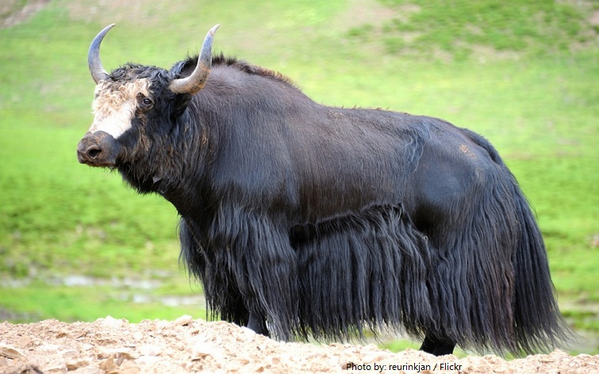

City in the new york state starts with my last name: Yorktown
University in Yorktown : Yeshiva university
Mascot of Yeshiva university
YAK
Fun facts about yak
Yaks live at the highest altitude of any mammal.
-
yak has more than one stomach which it uses to successfully get all the nutrients out of the plants it eats.
-
Yaks have firm, dense horns which they use to break through snow in order to get the plants that are buried underneath.

Index Page